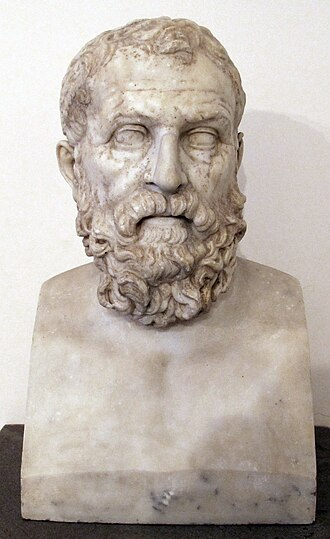
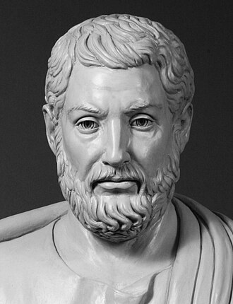
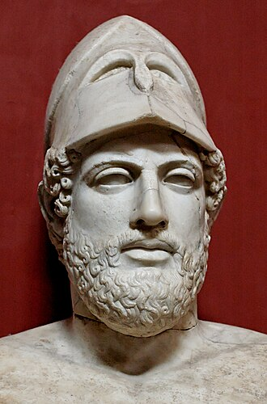

What Is the Difference Between Modern-Day Law and Law in Ancient Greece?
In modern times, the law is a legal system designed to maintain order, protect individuals and their rights, and ensure justice is applied fairly. Through courts, written statutes, and government institutions, it can be applied to large populations.
In contrast, ancient Greece hosted a plethora of legal systems depending on the region; however, I will focus mainly on ancient Athens, as it was where most of the legal developments were made. Athens did not employ typical democracy as we know it today but instead used demokratia. Within this system, only citizens who were adult males met in an assembly around 40 times a year to debate, present ideas, and vote.
While both modern and Athenian legal systems sought to maintain order, they contrast largely in their structure and inclusivity.
How Laws Were Created in Athens vs Today
Unlike modern day where laws are made by legislators, ancient Athens' laws were made by citizens within the assembly. Another striking difference is that, compared to today, Athenian courts generally used, often times, very large juries devised mostly of regular citizens, and that same group could decide both facts and the legal outcome; modern systems usually separate judges, juries, and legal rules more clearly. Athenian laws were publicly displayed on stone, while modern laws are distinguished by statutes, codes, and official legal publications.
"The Athenian popular courts drew no distinction between evidence relevant to guilt and evidence relevant to sentencing."Lanni, 2006
Who Had Rights and Who Was Excluded
While ancient Greece, specifically Athens, is often credited with having invented democracy, its form of demokratia was highly unequal, favoring male citizens while excluding slaves, women, foreigners, and, to a lesser degree, metics (registered foreigners with limited legal rights). Interestingly, prominent figures such as Plato, Socrates, and Aristotle (who himself was a metic) appeared largely neutral on this hierarchy, as they did not openly challenge the division between citizens and metics.
Important Figures Who Shaped Both Systems

Solon was a key figure in Athens' development because he laid the foundations for Athenian democracy by introducing legal reforms to get rid of aristocratic dominance, and debt slaves, as well as introducing the "shaking off of burdens". He chose to make these developments as he was concerned about the hereditary aristocracy, which the issues listed above stemmed from.

Though Cleisthenes also laid important groundwork for Athenian democracy by weakening aristocratic dominance, he differs from Solon, as he focused on political restructuring. In 508 BCE he laid a major part of the groundwork for Athenian democracy by introducing a new tribal system: organizing citizens into ten tribes based on local demes rather than clans, to diminish aristocratic power.

Pericles grew Athenian democracy not by expanding the population but by strengthening the pre-existing citizen body through making them participate more effectively. He also shifted even more power away from the aristocrats and gave it to the Assembly and Council. One of the ways he siphoned aristocratic power was by stripping Aeropagus: a council dominated by aristocrats, of most of its political strength.
Sir Edward was a cornerstone of modern law, more specifically common law and constitutional law; he was also able to be such an important figure through his role as Chief Justice of the Common Pleas. Though it was not his first action towards improving the law, his most famous act was subjecting monarchs to the law. One of his other most famous acts was writing and drafting the Petition of Right, which reinforced magna carta-esc laws such as arbitrary imprisonment (habeas corpus), taxation without consent, and martial law.
Blackstone's biggest achievement was systemizing common law, making it more teachable, and making it exportable which was key in shaping Anglo-American legal thought. Blackstone was also an important figure; but not the only one, in shaping press freedom. His formulated doctrine stated that placing restraints upon publications before release was unfounded. However, he supported post-publication consequences which he viewed as just since it acted as polite restrictions.
Ginsburg was a central figure in equality rights, authoring or joining many important decisions such as Obergefell v. Hodges (2015) solidifying same-sex marriage rights. Decisions such as these were pivotal ideas, many of which were not recognized in ancient Greece.
Strange Occurrences in the Athenian Legal System
The Trial of Socrates
One of the strangest trials within Athenian democracy was that of Socrates. Why would an elderly philosopher be charged with corrupting the youth, despite so many years of public teaching that had gone mostly unprosecuted? Socrates was born to a sculptor and a midwife and grew up to become an adult during Pericles' rise to the height of the "Golden Age" of Athenian democracy. This enriched intellectual and political age led to Socrates developing his own set of beliefs and values. During Socrates' trial he offered public honors or a fine; however, the court refused and offered the death sentence, which he calmly accepted. Later, as he sat in his cell drinking the hemlock provided to him, his friends urged him to escape; he refused, as he thought it would violate the laws of Athens and betray his principles. (Linder, n.d.)
The Statue Put to Trial
This story was said to have happened in Thasos. While not being in Athens, it maintained close political and cultural ties to Athens. One of the more interesting stories recounted in Description of Greece that appears in Book 6 was that of Theagenes. Theagenes of Thasos was a famous boxer who became a kind of celebrity due to his extraordinary physical prowess. Alongside his long career with an extraordinary number of victories, he racked up quite a few rivals. After Theagenes's death, a statue of him was erected in his honor, and according to Pausanias's account, one of his rivals visited the statue each night and whipped it out of spite. Even though the statue did not live, one night, it fell upon the rival, killing him.
Cases such as these just go to show that even as the Greeks tried to create a just and strict legal system through their worldview, citizens still had considerable freedom as they could propose an alternative sentence. As for the statue, Thasians had a local tradition which allowed the family of the rival to demand the statue be put on trial.
Conclusion
Despite these inequalities, Athenian legal systems, such as the draconian constitution, introduced several ideas that continue to influence modern legal thought. Laws were meant to be publicly known and not hidden, and legal decisions were meant to follow rules instead of someone's whim. Citizens were able to participate in legal judgement, giving a sense of civic involvement. Courts also provided a formal space for resolving disputes, replacing family feuds which were a cycle of private revenge between families. One thing to note, however, was that Ancient Greek law was often less centralized compared to modern day. In contrast, Athens stood out due to its transparent legislation and public courts, alongside introducing many ideas of which we now take for granted.
Works Cited
AAUW. "The Lasting Legacy of Justice Ruth Bader Ginsburg." AAUW, 23 September 2020, https://www.aauw.org/resources/news/the-lasting-legacy-of-justice-ruth-bader-ginsburg/.
Devereaux, Bret. "How to Polis 101, Part IIc: The Courts." A Collection of Unmitigated Pedantry, 6 April 2023.
Editorial. "Key Figures in Common Law: Influential Legal Pioneers." Laws Learned, Laws Learned, 11 July 2024, https://lawslearned.com/key-figures-in-common-law/. Accessed 11 May 2026.
"Greek Influence on Modern Legal Systems: How Ancient Law Still Shapes Justice Today." Greece High Definition, Greece High Definition, 26 July 2025, https://greecehighdefinition.squarespace.com/blog/2025/7/26/greek-influence-on-modern-legal-systems-how-ancient-law-still-shapes-justice-today.
Grundhauser, Eric. "Our Strange History of Accusing Inanimate Objects of Murder." Atlas Obscura, 11 February 2016, https://www.atlasobscura.com/articles/our-strange-history-of-accusing-inanimate-objects-of-murder.
Harvard Law School Center on the Legal Profession. "Six Keys to Compliance." The Compliance Movement., Harvard Law School., July/August 2016, https://clp.law.harvard.edu/knowledge-hub/magazine/issues/the-compliance-movement/six-keys-to-compliance/.
Herget, HM, et al. "Pericles—facts and information." National Geographic, 8 April 2019, https://www.nationalgeographic.com/culture/article/pericles. Accessed 11 May 2026.
Lanni, Adriaan. "Law and Justice in the Courts of Classical Athens." Cambridge University Press, 2006, https://assets.cambridge.org/052185/7597/excerpt/0521857597_excerpt.htm.
Learno Inc. "Cleisthenes Essays." Internet Public Library, https://www.ipl.org/topics/cleisthenes.
Linder, Douglas O. "Socrates Trial." Famous Trials, Douglas O. Linder, https://www.famous-trials.com/socrates/833-home.
Pirie, Madsen. "Edward Coke's contribution to English Common Law — Adam Smith Institute." Adam Smith Institute, 1 February 2019, https://www.adamsmith.org/blog/edward-cokes-contribution-to-english-common-law. Accessed 12 May 2026.
"The Political Reforms of Cleisthenes: Foundations of Democracy in Athens." Greek History Hub, https://www.greekhistoryhub.com/pages/the-political-reforms-of-cleisthenes-foundations-of-democracy-in-athens-82ee8a23.php. Accessed 8 May 2026.
"1628: Petition of Right | Online Library of Liberty." Online Library of Liberty, https://oll.libertyfund.org/pages/1628-petition-of-right. Accessed 12 May 2026.